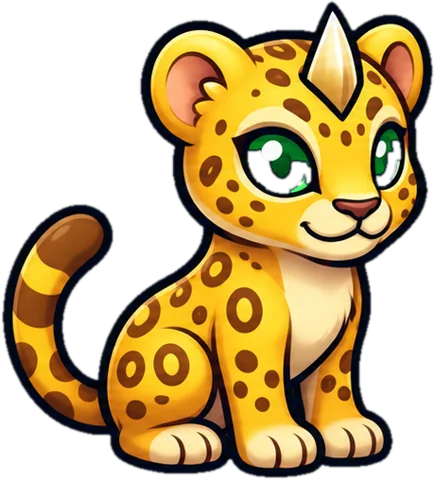

 FireRock
FireRockTap a stage to read its story.
Ocelyx is a round-faced golden ocelot kit with warm amber spots and vivid green eyes that study Granite Heights' lava-warmed boulders with enormous curiosity. Its paws radiate a faint heat it has not yet learned to control, leaving small scorch-paw-prints on soft stone wherever it walks. It stalks the lower sun-baked shelves of the Heights, mostly practicing pounces on rocks to see which ones explode and which ones just hurt its toes. Results are instructive.
Field note: Ocelyx's paw-prints on soft volcanic rock harden within an hour and stay forever - there are trails of them through the lower Heights going back decades.
Granite Heights. Ocelyx and its family are found in the Granite Heights. See everyone who lives there.
Share a Bond Food that matches its types to become friends. Ocelyx loves:
A Bond Food is not a trick. It joins your spirit with the Kimuro's spirit, and only when it chooses you.
Print the Kimuro adventure packs: mazes, cards, a board game and Bond Mark medals.
See the printable packs